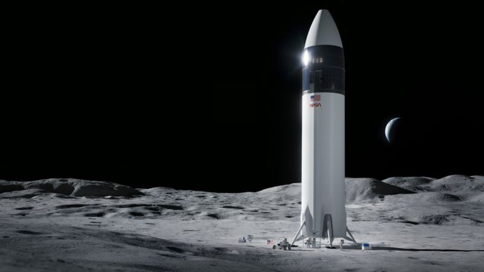

El calvario de los "olvidados" sobrevivientes chinos del Titanic
Cuando el lujoso barco de pasajeros Titanic se hundió en el océano Atlántico, en abril de 1912, miles de personas terminaron en las heladas aguas del mar. Solamente uno de los botes salvavidas que lograron escapar el naufragio regresó a buscar posibles sobrevivientes. En la oscuridad, encontraron a un joven chino aferrado a una puerta de madera, temblando de frío pero aún con vida.
Ese hombre era Fang Lang, uno de seis sobrevivientes chinos del Titanic, y su rescate iría a inspirar una famosa escena (la de los enamorados Rose y Jack) en la taquillera película de Hollywood de 1997, Titanic.
SpaceX: la NASA selecciona a la empresa de Elon Musk para construir la nave con la que regresará a la Luna
La Agencia Aeroespacial de Estados Unidos, NASA, seleccionó a la empresa SpaceX, de Elon Musk, para construir la nave con la que planea volver a llevar humanos a la Luna en esta década.
El vehículo trasportará al próximo hombre y a la primera mujer hasta la superficie lunar, según el programa Artemis de la agencia espacial. Otra de las metas del programa será llevar a la Luna a la primera persona de color. El diseño del vehículo lunar está basado en la nave Starship de SpaceX, que está siendo sometido a pruebas en una estación experimental en el sur de Texas
Al menos 8 muertos en un tiroteo en un almacén de FedEx en Indianápolis
Al menos ocho personas murieron y varias resultaron heridas este jueves en la noche en un tiroteo ocurrido en la ciudad estadounidense de Indianápolis, en el estado de Indiana, informó la policía.
Los testigos escucharon varios disparos en una instalación de la empresa postal FedEx y uno dijo que había visto a un hombre disparar un arma automática. Según se reportó, el atacante, que se cree actuaba solo, se suicidó. Las autoridades informaron que no había más amenazas para la seguridad pública. La policía dice que varios de los heridos están en el hospital. El almacén de FedEx en cuestión está cerca del aeropuerto de la ciudad, pero los vuelos no se han visto afectados. "Cuando llegaron los agentes, se encontraron en una situación de tiroteo activo", indicó la portavoz de la policía de la ciudad, Genae Cook, y agregó que el hecho tuvo lugar a alrededor de las 23:00 hora local.